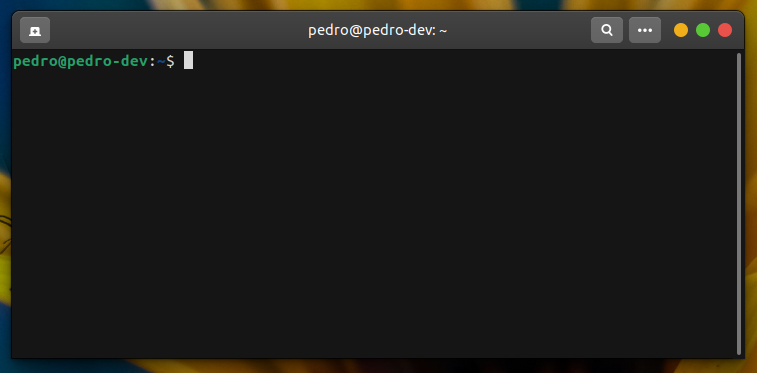
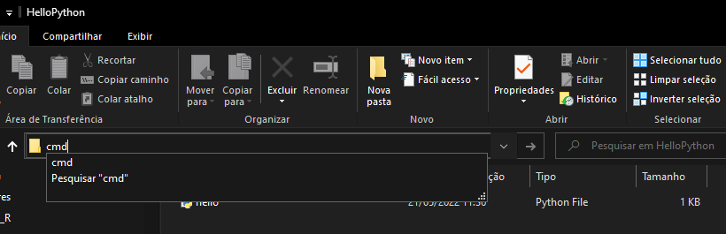
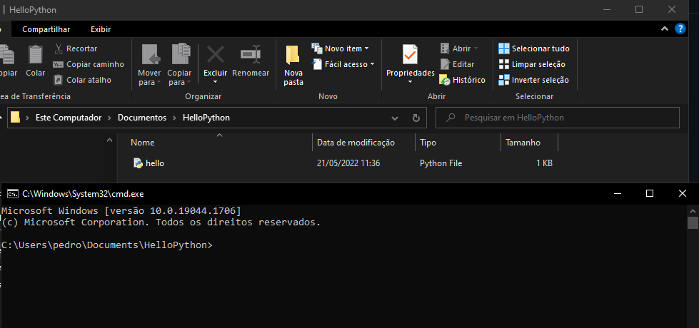
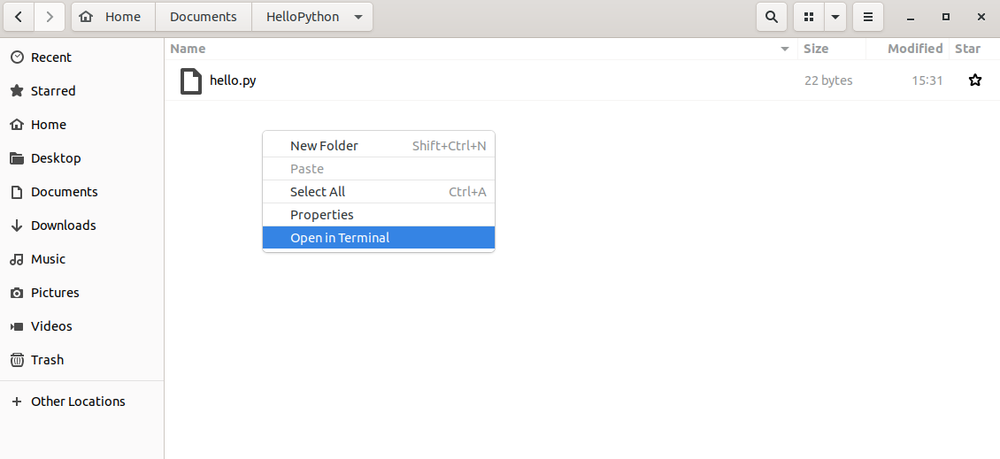
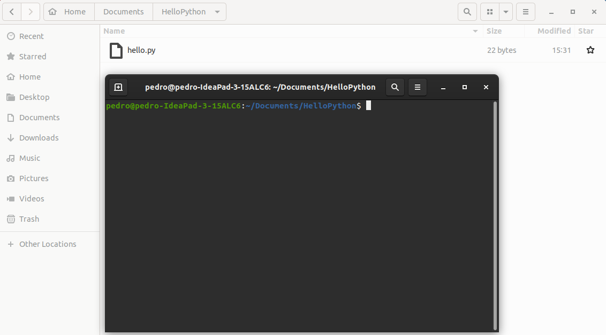

Appendix A — Opening the terminal of your OS
Every OS comes with a terminal (or a command prompt). A terminal is usually just a black screen where you can send commands to be executed by your OS. The Figure A.1 shows a print screen of the terminal in Ubuntu. The terminal on Windows is very similar to this.

Terminals are incredibely flexible tools, and you will find this tool very useful for a number of things. However, since they are just a black and empty screen, they give you no clue of what you should do, or what commands are available to you.
That is ok, for now, you should not worry about that. I will expose many terminal commands in this book, and these commands should be used inside these terminals that comes with your OS. The next sub-sections will show you how to open a terminal in each one of the OS’s where Spark is available. Lets begin with Windows.
A.0.1 Opening a terminal on Windows
There are some different approaches to do this, but, the one that I find the most useful, is to open a terminal from inside a folder, using the default File Explorer program of Windows.
This is very useful, because we normally use terminal commands to affect a set of files that are stored inside a specific folder in our computer.
As a result, when we open a terminal from inside a folder, using the File Explorer, the terminal opened is already rooted inside the folder where our files are stored. In other words, we already have easy access to the files that we want to affect/use in our command, and we do not have the work to change or adjust directories in this terminal.
For example, lets suppose that we want to use a terminal command to use a file called hello.py, and, that this hello.py file is stored inside a folder called HelloPython. You can see in Figure A.2, that this folder is in path C:\Users\pedro\Documents\HelloPython. So, the first step, is to use the File Explorer of Windows, to open this folder, like in Figure A.2.

HelloPython folder in WindowsAfter you opened this folder, substitute the path to the folder in the search box with the word “cmd”, like in Figure A.3, and them, press Enter in the keyboard.

As a result, a new terminal will open. See in Figure A.4, that this new terminal is already looking to (or is already rooted on) this HelloPython folder. This way, we can easily access the files stored inside this folder, like the hello.py file.

A.0.2 Opening a terminal on Linux
Is fairly easy to open a terminal on a Linux distribution. Again, is very useful when you open the terminal from inside the folder you are interested in. Because you will have an easier access to all the files that are stored inside this folder.
To do this in Linux, you use the built-in File Explorer to open the folder where you want to root your terminal. At the moment, I am using an Ubuntu distribution. I just opened the same HelloPython folder, with the same hello.py file, in the File Explorer of Linux. As shown in Figure A.5:

HelloPython folder in LinuxAfter you opened the folder, just click with the right button of your mouse, and select the “Open in Terminal” option, and a new terminal should appear on your screen. See in Figure A.6, that the new terminal is already looking to the HelloPython folder, as we expected.

A.0.3 Opening a terminal in MacOs
Unfortunately, I do not have a Mac machine in my possession, so I cannot easily show you how to open a terminal in MacOs. But there a lot of articles available in the internet discussing how to open a terminal in MacOs. For example, there is a article from the support of Apple1, or this other article from iDownloadBlog2.